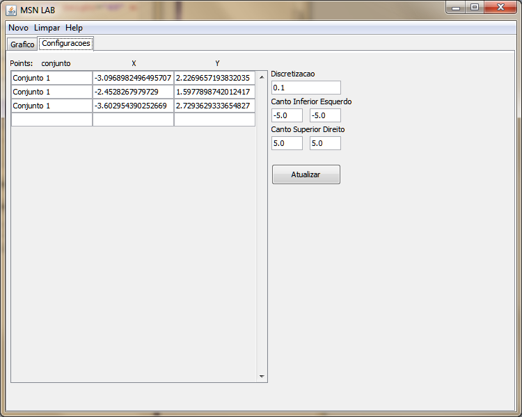
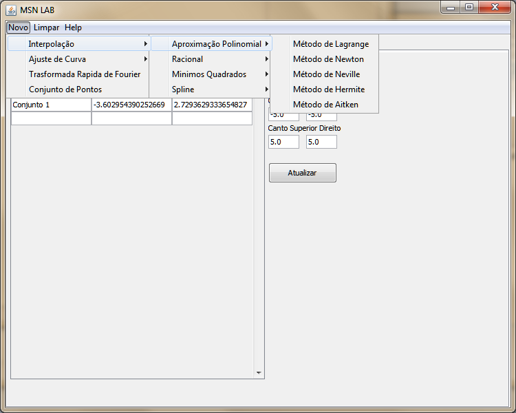

A interpolação polinomial que se obtém das fórmulas de Lagrange ou Newton utiliza como única informação as abcissas e as ordenadas tabeladas. Se, adicionalmente, se dispuser de informação sobre as derivadas da função, pode melhorar-se a qualidade da aproximação aumentando-se o grau do polinómio interpolador. Essa técnica designa-se por interpolação de Hermite e, geralmente, apresenta uma menor tendência para comportamento oscilatório.
Para utilizar esta transfomada no MSN LAB siga as instruções abaixo.
Estabeleça um conjunto de pontos na aba de Configurações.
Clique em Novo -> Interpolação -> Aproximação Polinomial -> Método de Hermite
